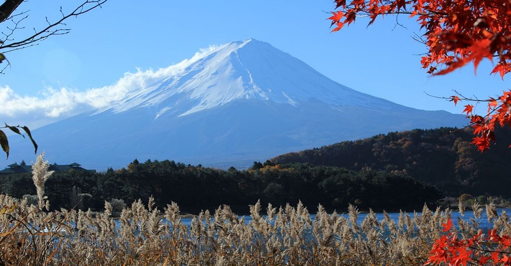

Travel
I love to travel and some of my favorite places to visit are:
Switzerland
Reasons I love Switzerland:
- Adventure
- Beautiful Mountains
- High Standard of Living
If you're into outdoor adventures, Switzerland is an absolute playground. In the winter, you can hit the slopes for some world-class skiing or snowboarding. And in the summer, the hiking trails are just waiting to be explored. You can even try paragliding for a bird's-eye view of this stunning scenery.
You've got to try the cheese fondue and raclette. And don't even get me started on the chocolates – they're like tiny bites of heaven. Wash it all down with some Swiss wine, and you're in culinary heaven.


Mount Fuji
Reasons I love Mount Fuji:
- Cultural Significance
- Seasonal Beauty
- Hot Springs
"Beyond its physical beauty, Fujisan holds deep cultural significance. It's considered sacred, adorned with shrines and temples that resonate with ancient rituals and traditions. Visiting these sites is a profound spiritual experience."
"If you're up for a challenge, consider climbing this magnificent peak. The trails lead you through diverse landscapes, from lush forests to rocky volcanic terrain. And the reward at the top? Watching the sunrise from the summit, a moment that touches your soul."
